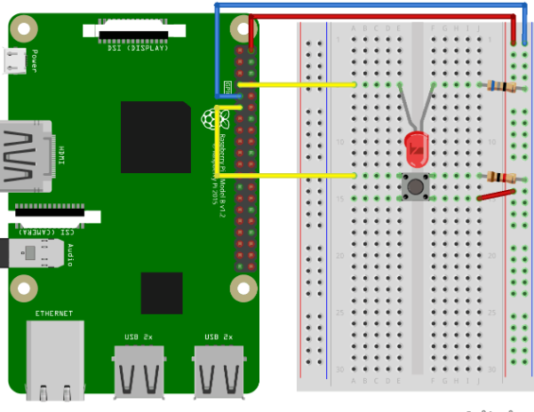

உள்ளீடு மற்றும் வெளியீடு இரண்டையும் பயன்படுத்துதல்
முந்தைய அத்தியாயத்தில் ஒரு Raspberry Pi மற்றும் அதன் GPIO ஐப் பயன்படுத்தி ஒரு LED ஐ ஒளிரச் செய்வது எப்படி என்று கற்றுக்கொண்டோம்.
அதற்காக நாம் ஒரு GPIO பின்னை "வெளியீடு" ஆகப் பயன்படுத்தினோம்.
இந்த அத்தியாயத்தில் நாம் மற்றொரு GPIO பின்னை "உள்ளீடு" ஆகப் பயன்படுத்துவோம்.
5 விநாடிகள் ஒளிர்வதற்குப் பதிலாக, பிரெட்போர்டுடன் இணைக்கப்பட்ட ஒரு பொத்தானை நீங்கள் அழுத்தும் போது LED எரிய வேண்டும்.
எங்களுக்கு என்ன தேவை?
இந்த அத்தியாயத்தில் நாம் ஒரு புஷ் பட்டனுடன் ஒரு LED விளக்கைக் கட்டுப்படுத்தும் ஒரு எளிய உதாரணத்தை உருவாக்குவோம்.
இதற்கு உங்களுக்கு தேவை:
- A Raspberry Pi with Raspian, internet, SSH, with Node.js installed
- The onoff module for Node.js
- 1 x Breadboard
- 1 x 68 Ohm resistor
- 1 x 1k Ohm resistor
- 1 x Through Hole LED
- 1 x Push Button
- 4 x Female to male jumper wires
- 1 x Male to Male jumper wires
வெவ்வேறு கூறுகளின் விளக்கங்களுக்கு மேலே உள்ள பட்டியலில் உள்ள இணைப்புகளைக் கிளிக் செய்யவும்.
குறிப்பு:
நீங்கள் பயன்படுத்தும் LED வகையைப் பொறுத்து உங்களுக்குத் தேவையான மின்தடை நாம் பயன்படுத்துவதிலிருந்து வேறுபட்டிருக்கலாம். பெரும்பாலான சிறிய LED க்களுக்கு ஒரு சிறிய மின்தடை மட்டுமே தேவை, சுமார் 200-500 ஓம்கள். நீங்கள் பயன்படுத்தும் சரியான மதிப்பு பொதுவாக முக்கியமானது அல்ல, ஆனால் மின்தடையின் மதிப்பு சிறியதாக இருந்தால், LED பிரகாசமாக ஒளிரும்.
இந்த அத்தியாயத்தில் நாம் கடந்த அத்தியாயத்தில் கட்டிய சுற்றுகளின் அடிப்படையில் கட்டுவோம், எனவே மேலே உள்ள பட்டியலில் சில பகுதிகள் உங்களுக்குத் தெரிந்திருக்கும்.
சுற்றுகளைக் கட்டும் பணி
இப்போது எங்கள் பிரெட்போர்டில் சுற்றுகளைக் கட்ட வேண்டிய நேரம் வந்துவிட்டது. கடந்த அத்தியாயத்தில் நாம் உருவாக்கிய சுற்றுகளை தொடக்கப் புள்ளியாகப் பயன்படுத்துவோம்.
நீங்கள் மின்னணுவியலில் புதியவராக இருந்தால், Raspberry Pi க்கான மின்சாரத்தை அணைக்க பரிந்துரைக்கிறோம். மேலும் அதைச் சேதப்படுத்தாமல் இருக்க ஆன்டி-ஸ்டேடிக் பாய அல்லது கிரவுண்டிங் பட்டா பயன்படுத்தவும்.
Raspberry Pi ஐ சரியாக அணைக்க கட்டளையைப் பயன்படுத்தவும்:
pi@jassifteam:~ $ sudo shutdown -h nowRaspberry Pi இல் LED கள் ஒளிர்வதை நிறுத்திய பிறகு, Raspberry Pi இலிருந்து பவர் பிளக்கை வெளியே இழுக்கவும் (அல்லது அது இணைக்கப்பட்டுள்ள பவர் ஸ்ட்ரிப்பை அணைக்கவும்).
சரியாக அணைக்காமல் பிளக்கை இழுப்பது நினைவக கார்ட்டின் ஊழலை ஏற்படுத்தக்கூடும்.

Raspberry Pi 3 with Breadboard. LED and Button circuit
மேலே உள்ள சுற்றுகளின் விளக்கப்படத்தைப் பாருங்கள்.
கடந்த அத்தியாயத்தில் நாம் உருவாக்கிய சுற்றுகளுடன் தொடங்குவோம்:
உங்கள் சுற்று இப்போது முழுமையாக இருக்க வேண்டும், மேலும் உங்கள் இணைப்புகள் மேலே உள்ள விளக்கப்படத்தைப் போலவே இருக்க வேண்டும்.
இப்போது Raspberry Pi ஐ துவக்குவதற்கும், அதனுடன் தொடர்பு கொள்ள Node.js ஸ்கிரிப்டை எழுதுவதற்கும் நேரம் வந்துவிட்டது.
Raspberry Pi மற்றும் Node.js LED மற்றும் பட்டன் ஸ்கிரிப்ட்
"nodetest" அடைவிற்குச் சென்று, "buttonled.js" என்ற புதிய கோப்பை உருவாக்கவும்:
pi@jassifteam:~ $ nano buttonled.jsகோப்பு இப்போது திறக்கப்பட்டு உள்ளமைக்கப்பட்ட Nano Editor உடன் திருத்தப்படலாம்.
பின்வருவனவற்றை எழுதவும் அல்லது ஒட்டவும்:
buttonled.js
var Gpio = require('onoff').Gpio; //include onoff to interact with the GPIO
let LED = new Gpio(4, 'out'); //use GPIO pin 4 as output
let pushButton = new Gpio(17, 'in', 'both'); //use GPIO pin 17 as input, and 'both' button presses, and releases should be handled
pushButton.watch(function (err, value) { //Watch for hardware interrupts on pushButton GPIO, specify callback function
if (err) { //if an error
console.error('There was an error', err); //output error message to console
return;
}
LED.writeSync(value); //turn LED on or off depending on the button state (0 or 1)
});
function unexportOnClose() { //function to run when exiting program
LED.writeSync(0); // Turn LED off
LED.unexport(); // Unexport LED GPIO to free resources
pushButton.unexport(); // Unexport Button GPIO to free resources
};
process.on('SIGINT', unexportOnClose); //function to run when user closes using ctrl+cகுறியீட்டைச் சேமிக்க "Ctrl+x" ஐ அழுத்தவும். "y" உடன் உறுதிப்படுத்தவும், மற்றும் பெயரை "Enter" உடன் உறுதிப்படுத்தவும்.
குறியீட்டை இயக்கவும்:
pi@jassifteam:~ $ node buttonled.jsஇப்போது நீங்கள் பொத்தானை அழுத்தும் போது LED எரிய வேண்டும், மேலும் அதை விடுவிக்கும் போது அணைய வேண்டும்.
Ctrl+c உடன் நிரலை முடிக்கவும்.